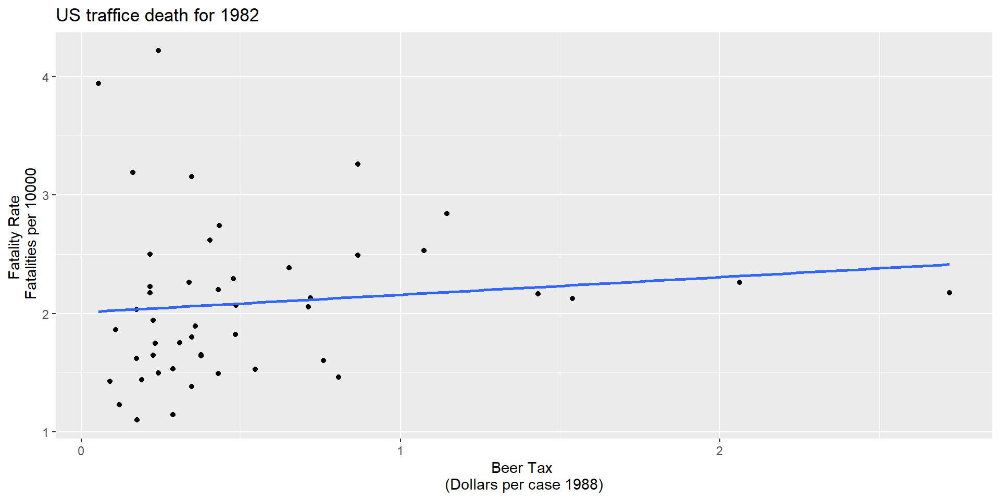

Rows: 336
Columns: 34
$ state <fct> al, al, al, al, al, al, al, az, az, az, az, az, az, az, a…
$ year <fct> 1982, 1983, 1984, 1985, 1986, 1987, 1988, 1982, 1983, 198…
$ spirits <dbl> 1.37, 1.36, 1.32, 1.28, 1.23, 1.18, 1.17, 1.97, 1.90, 2.1…
$ unemp <dbl> 14.4, 13.7, 11.1, 8.9, 9.8, 7.8, 7.2, 9.9, 9.1, 5.0, 6.5,…
$ income <dbl> 10544.15, 10732.80, 11108.79, 11332.63, 11661.51, 11944.0…
$ emppop <dbl> 50.69204, 52.14703, 54.16809, 55.27114, 56.51450, 57.5098…
$ beertax <dbl> 1.53937948, 1.78899074, 1.71428561, 1.65254235, 1.6099070…
$ baptist <dbl> 30.3557, 30.3336, 30.3115, 30.2895, 30.2674, 30.2453, 30.…
$ mormon <dbl> 0.32829, 0.34341, 0.35924, 0.37579, 0.39311, 0.41123, 0.4…
$ drinkage <dbl> 19.00, 19.00, 19.00, 19.67, 21.00, 21.00, 21.00, 19.00, 1…
$ dry <dbl> 25.0063, 22.9942, 24.0426, 23.6339, 23.4647, 23.7924, 23.…
$ youngdrivers <dbl> 0.211572, 0.210768, 0.211484, 0.211140, 0.213400, 0.21552…
$ miles <dbl> 7233.887, 7836.348, 8262.990, 8726.917, 8952.854, 9166.30…
$ breath <fct> no, no, no, no, no, no, no, no, no, no, no, no, no, no, n…
$ jail <fct> no, no, no, no, no, no, no, yes, yes, yes, yes, yes, yes,…
$ service <fct> no, no, no, no, no, no, no, yes, yes, yes, yes, yes, yes,…
$ fatal <int> 839, 930, 932, 882, 1081, 1110, 1023, 724, 675, 869, 893,…
$ nfatal <int> 146, 154, 165, 146, 172, 181, 139, 131, 112, 149, 150, 17…
$ sfatal <int> 99, 98, 94, 98, 119, 114, 89, 76, 60, 81, 75, 85, 87, 67,…
$ fatal1517 <int> 53, 71, 49, 66, 82, 94, 66, 40, 40, 51, 48, 72, 50, 54, 3…
$ nfatal1517 <int> 9, 8, 7, 9, 10, 11, 8, 7, 7, 8, 11, 19, 16, 14, 5, 2, 2, …
$ fatal1820 <int> 99, 108, 103, 100, 120, 127, 105, 81, 83, 118, 100, 104, …
$ nfatal1820 <int> 34, 26, 25, 23, 23, 31, 24, 16, 19, 34, 26, 30, 25, 14, 2…
$ fatal2124 <int> 120, 124, 118, 114, 119, 138, 123, 96, 80, 123, 121, 130,…
$ nfatal2124 <int> 32, 35, 34, 45, 29, 30, 25, 36, 17, 33, 30, 25, 34, 31, 1…
$ afatal <dbl> 309.438, 341.834, 304.872, 276.742, 360.716, 368.421, 298…
$ pop <dbl> 3942002, 3960008, 3988992, 4021008, 4049994, 4082999, 410…
$ pop1517 <dbl> 208999.6, 202000.1, 197000.0, 194999.7, 203999.9, 204999.…
$ pop1820 <dbl> 221553.4, 219125.5, 216724.1, 214349.0, 212000.0, 208998.…
$ pop2124 <dbl> 290000.1, 290000.2, 288000.2, 284000.3, 263000.3, 258999.…
$ milestot <dbl> 28516, 31032, 32961, 35091, 36259, 37426, 39684, 19729, 1…
$ unempus <dbl> 9.7, 9.6, 7.5, 7.2, 7.0, 6.2, 5.5, 9.7, 9.6, 7.5, 7.2, 7.…
$ emppopus <dbl> 57.8, 57.9, 59.5, 60.1, 60.7, 61.5, 62.3, 57.8, 57.9, 59.…
$ gsp <dbl> -0.022124760, 0.046558253, 0.062797837, 0.027489973, 0.03…Panel Data Regression
Zahid Asghar
School of Economics, QAU, Islamabad
Panel Data Regression
A panel dataset contains observations on multiple entities (individuals), where each entity is observed at two or more points in time.
Hypothetical examples:
Data on 50 districts in 2010 floods and again in 2022, for 100 observations total.
Data on 100 SMES, each SME is observed in 3 years, for a total of 150 observations.
Data on 1000 individuals, in four different months, for 4000 observations total.
Notations for Panel Data
A double subscript distinguishes entities (states) and time periods (years)
\(i\) = entity (state), \(n\) = number of entities, so \(i = 1,\dots,n\)
\(t\) = time period (year), \(T\) = number of time periods so \(t =1,\dots,T\)
Data: Suppose we have 1 regressor. The data are:
\((X_{it}, Y_{i}t), i = 1,\dots,n,\ t = 1,…,T\)
Panel data with \(K\) regressors \((X_{1it},X_{2it},\dots,X_{kit} Y_{i}t), i = 1,\dots,n,\ t = 1,…,T\) \(n\) = number of entities (states) \(T\) = number of time periods (years) Also called longitudinal data
Why are panel data useful?
With panel data we can control for factors that: - Vary across entities (states) but do not vary over time - Could cause omitted variable bias if they are omitted - are unobserved or unmeasured – and therefore cannot be included in the regression using multiple regression
Here’s the key idea: > If an omitted variable does not change over time, then any changes in Y over time cannot be caused by the omitted variable.
Example of a panel data set
Observational unit: a year in a U.S. state - 48 U.S. states, so \(n\) = # of entities = 48$ - 7 years (1982,…, 1988), so \(T\) = # of time periods = 7 - Balanced panel, so total # observations = \(7\times48\) = 336 Variables: - Traffic fatality rate (# traffic deaths in that state in that year, per 10,000 state residents) - Tax on a case of beer - Other (legal driving age, drunk driving laws, etc.)
An overview of data
A large number of variables and 336 total observations. We need to select only a few variables required in doing this exercise.
# A tibble: 7 × 2
year count
<fct> <int>
1 1982 48
2 1983 48
3 1984 48
4 1985 48
5 1986 48
6 1987 48
7 1988 48U.S traffic death data for 1982
U.S traffic death data for 1988
Regression line
\(\widehat{FatalityRate}= 2.01 + 0.15beertax\)
\(\widehat{FatalityRate}= 1.86 + 0.43beertax\)
High alcohal tax, more deaths :smiley:
Why might there be higher more traffic deaths in states that have higher alcohol taxes?
Other factors that determine traffic fatality rate: - Quality (age) of automobiles - Quality of roads - “Culture” around drinking and driving - Density of cars on the road
These omitted variables could cause omitted variable bias
Example #1: traffic density. Suppose:
High traffic density means more traffic deaths
(Western) states with lower traffic density have lower alcohol taxes
Then the two conditions for omitted variable bias are satisfied.
- Specifically, “high taxes” could reflect “high traffic density” (so the OLS coefficient would be biased positively – high taxes, more deaths)
- Panel data lets us eliminate omitted variable bias when the omitted variables are constant over time within a given state.
Cultural attitude towards driving and drinking
- arguably are a determinant of traffic deaths; and
- potentially are correlated with the beer tax, so beer taxes could be picking up cultural differences (omitted variable bias).
- Then the two conditions for omitted variable bias are satisfied. Specifically, “high taxes” could reflect “cultural attitudes towards drinking” (so the OLS coefficient would be biased)
- Panel data lets us eliminate omitted variable bias when the omitted variables are constant over time within a given state.
Panel Data with Two Time Periods
Consider the panel data model: \(\widehat{FatalityRate_{it}} = \beta_0 + \beta_1 BeerTax_{it} + \beta_2Zi + u_{it}\)
\(Z_i\) is a factor that does not change over time (density), at least during the years on which we have data. • Suppose \(Z_i\) is not observed, so its omission could result in omitted variable bias. • The effect of \(Z_i\) can be eliminated using \(T = 2\) years.
The key idea:
Any change in the fatality rate from 1982 to 1988 cannot be caused by \(Z_i\), because \(Z_i\) (by assumption) does not change between 1982 and 1988.
The math: consider fatality rates in 1988 and 1982: \(FatalityRate_{i1988} = \beta_0 + \beta_1 BeerTax_{it} + \beta_2Zi + u_{i1988}\) \(FatalityRate_{i1982} = \beta_0 + \beta_1 BeerTax_{it} + \beta_2Zi + u_{i1982}\)
Suppose \(E{(u_{it}}{/BeerTax_{it},Z_i})=0\) E(uit|BeerTaxit, Zi) = 0.
Subtracting 1988 – 1982 (that is, calculating the change), eliminates the effect of \(Z_i\dots\)
\(FatalityRate_{i1988} = \beta_0 + \beta_1 BeerTax_{it} + \beta_2Zi + u_{i1988}\) \(FatalityRate_{i1982} = \beta_0 + \beta_1 BeerTax_{it} + \beta_2Zi + u_{i1982}\)
so \(FatalityRate_{i1988} – FatalityRate_{i1982}=\\\beta_1(BeerTaxi1988 – BeerTaxi1982) + (u_{i1988} – u_{i1982})\)
• The new error term, \((u_{i1988} – u_{i1982})\), is uncorrelated with either \(FatalityRate_{i1988}\) or \(FatalityRate_{i1982}\) • This “difference” equation can be estimated by OLS, even though \(Z_i\) isn’t observed. • The omitted variable \(Z_i\) doesn’t change, so it cannot be a determinant of the change in \(Y\)
1982 data
\(\widehat{FatalityRate}= 2.01 + 0.15beertax \ n=48\)
1988 data
\(\widehat{FatalityRate}= 1.86 + 0.43beertax \ n=48\)
Difference regression
\(\widehat{FatalityRate_{i1988} - FatalityRate_{i1982}} =\\ -\underset{(0.065)}{0.072} -\underset{(0.36)}{1.04} \times (BeerTax_{i1988}-BeerTax_{i1982}).\)
t test of coefficients:
Estimate Std. Error t value Pr(>|t|)
(Intercept) -0.072037 0.065355 -1.1022 0.276091
diff_beertax -1.040973 0.355006 -2.9323 0.005229 **
---
Signif. codes: 0 '***' 0.001 '**' 0.01 '*' 0.05 '.' 0.1 ' ' 1
Fixed Effects Regression
What if you have more than 2 time periods \((T > 2)?\)
\(Y_{it} = \beta_0 + \beta_1 X_{it} + \beta_2Z_{i} + u_{it}, i =1,\dots,n, T = 1,\dots,T\)
We can rewrite this in two useful ways: 1. “\(n-1\) binary regressor” regression model 2. “Fixed Effects” regression model
We first rewrite this in “fixed effects” form. Suppose we have \(n = 3\) states: California, Texas, Massachusetts.
\(Y_{it} = \beta_0 + \beta_1 X_{it} + \beta_2Z_{i} + u_{it}, i =1,\dots,n, T = 1,\dots,T\)
Population regression for California (that is, \(i = CA\)): \(Y_{CA,t} = \beta_0 + \beta_1X_{CA,t} + \beta_2Z_{CA} + u_{CA,t}\\ = (\beta_0 + \beta_2Z_{CA}) + \beta_1X_{CA,t} + u_{CA,t}\) or \(Y_{CA,t} = \alpha + \beta_1X_{CA,t} + u_{CA,t}\)
• \(\alpha_{CA} = \beta_0 + \beta_1Z_{CA}\) doesn’t change over time • \(\alpha_{CA}\) is the intercept for CA, and \(\beta_1\) is the slope • The intercept is unique to CA, but the slope is the same in all the states: parallel lines.
\(Y_{it} = \beta_0 + \beta_1 X_{it} + \beta_2Z_{i} + u_{it}, i =1,\dots,n, T = 1,\dots,T\)
Population regression for Texax (that is, \(i = TX\)): \(Y_{TX,t} = \beta_0 + \beta_1X_{TX,t} + \beta_2Z_{TX} + u_{TX,t}\\ = (\beta_0 + \beta_2Z_{TX}) + \beta_1X_{TX,t} + u_{TX,t}\) or \(Y_{TX,t} = \alpha + \beta_1X_{TX,t} + u_{TX,t}\)
Collecting the like terms
\(Y_{CA,t} = \alpha + \beta_1X_{CA,t} + u_{CA,t}\)
\(Y_{TX,t} = \alpha + \beta_1X_{TX,t} + u_{TX,t}\)
\(Y_{MA,t} = \alpha + \beta_1X_{MA,t} + u_{MA,t}\)
or \(Y_{it} = \alpha_{i} + \beta_1 X_{it} + u_{it}, i =CA,TX,MA, T = 1,\dots,T\)
Regression equation for three states
 In binary regressor form: \(Y_{it} = \beta_0 + \gamma CADCAi + \gamma TXDTXi + \beta_1X_{it} + u_{it}\) • \(DCA_{i} = 1\) if state is \(CA, = 0\) otherwise • \(DTX_{t} = 1\) if state is \(TX, = 0\) otherwise • leave out \(DMA_{i}\) (why?)
In binary regressor form: \(Y_{it} = \beta_0 + \gamma CADCAi + \gamma TXDTXi + \beta_1X_{it} + u_{it}\) • \(DCA_{i} = 1\) if state is \(CA, = 0\) otherwise • \(DTX_{t} = 1\) if state is \(TX, = 0\) otherwise • leave out \(DMA_{i}\) (why?)
The Fixed Effects Regression Model
The fixed effect model is \(\begin{align} Y_{it} = \beta_1 X_{1,it} + \cdots + \beta_k X_{k,it} + \alpha_i + u_{it} \tag{10.3} \end{align}\) with \(i=1,\dots,n\) and \(t=1,\dots,T\) . The \(\alpha_i\) are entity-specific intercepts that capture heterogeneities across entities. An equivalent representation of this model is given by \(\begin{align} Y_{it} = \beta_0 + \beta_1 X_{1,it} + \cdots + \beta_k X_{k,it} + \gamma_2 D2_i + \gamma_3 D3_i + \cdots + \gamma_n Dn_i + u_{it} \tag{10.4} \end{align}\)
where the \(D2_i,D3_i,\dots,Dn_i\) are dummy variables.
Summary: Two ways to write the fixed effects model “n-1 binary regressor” form
\(Y_{it} = \beta_0 + \beta_1 X_{1,it} + \gamma_2 D2_i + \gamma_3 D3_i + \cdots + \gamma_n Dn_i + u_{it}\)
where \(D2i =1\) if \(i=2\) \(=0\) otherwise , etc.
“Fixed effects” form: \(Y_{it} = \beta_1X_{it} + \alpha_i + u_{it}\)
• \(\alpha_i\) is called a “state fixed effect” or “state effect” – it is the constant (fixed) effect of being in state \(i\).
Fixed Effects Regression: Estimation
Three estimation methods: 1. “n-1 binary regressors” OLS regression 2. “Entity-demeaned” OLS regression 3. “Changes” specification, without an intercept (only works for T = 2)
• These three methods produce identical estimates of the regression coefficients, and identical standard errors. • We already did the “changes” specification (1988 minus 1982) – but this only works for T = 2 years • Methods #1 and #2 work for general T • Method #1 is only practical when n isn’t too big
1. “n-1 binary regressors” OLS regression
\(Y_{it} = \beta_0 + \beta_1 X_{1,it} + \gamma_2 D2_i + \gamma_3 D3_i + \cdots + \gamma_n Dn_i + u_{it}\)
where \(D2i =1\) if \(i=2\) \(=0\) otherwise , - First create the binary variables D2i,…,Dni - Then estimate (1) by OLS - Inference (hypothesis tests, confidence intervals) is as usual (using heteroskedasticity-robust standard errors) - This is impractical when n is very large (for example if n = 1000 workers)
2. “Entity-demeaned” OLS regression
\[\begin{align*} \frac{1}{n} \sum_{i=1}^n Y_{it} =& \, \beta_1 \frac{1}{n} \sum_{i=1}^n X_{it} + \frac{1}{n} \sum_{i=1}^n a_i + \frac{1}{n} \sum_{i=1}^n u_{it} \\ \overline{Y} =& \, \beta_1 \overline{X}_i + \alpha_i + \overline{u}_i. \end{align*}\] Subtracting from 10.1 yields $$\[\begin{align} \begin{split} Y_{it} - \overline{Y}_i =& \, \beta_1(X_{it}-\overline{X}_i) + (u_{it} - \overline{u}_i) \\ \overset{\sim}{Y}_{it} =& \, \beta_1 \overset{\sim}{X}_{it} + \overset{\sim}{u}_{it}. \end{split} \tag{10.5} \end{align}\]$$
In this model, the OLS estimate of the parameter of interest \(\beta_1\) is equal to the estimate obtained using (10.2) — without the need to estimate \(n-1\) dummies and an intercept.
Application to traffic deaths
Panel Data for two years
t test of coefficients:
Estimate Std. Error t value Pr(>|t|)
(Intercept) -0.072037 0.065355 -1.1022 0.276091
diff_beertax -1.040973 0.355006 -2.9323 0.005229 **
---
Signif. codes: 0 '***' 0.001 '**' 0.01 '*' 0.05 '.' 0.1 ' ' 1compute mean fatality rate over all states for all time periods
# A tibble: 7 × 2
year mean
<fct> <dbl>
1 1982 2.09
2 1983 2.01
3 1984 2.02
4 1985 1.97
5 1986 2.07
6 1987 2.06
7 1988 2.07[1] 2.040444 mean
1 2.040444\(\begin{align} FatalityRate_{it} = \beta_1 BeerTax_{it} + StateFixedEffects\\ + u_{it}, \tag{10.6} \end{align}\)
Call:
lm(formula = fatal_rate ~ beertax + state - 1, data = df)
Coefficients:
beertax stateal stateaz statear stateca stateco statect statede
-0.6559 3.4776 2.9099 2.8227 1.9682 1.9933 1.6154 2.1700
statefl statega stateid stateil statein stateia stateks stateky
3.2095 4.0022 2.8086 1.5160 2.0161 1.9337 2.2544 2.2601
statela stateme statemd statema statemi statemn statems statemo
2.6305 2.3697 1.7712 1.3679 1.9931 1.5804 3.4486 2.1814
statemt statene statenv statenh statenj statenm stateny statenc
3.1172 1.9555 2.8769 2.2232 1.3719 3.9040 1.2910 3.1872
statend stateoh stateok stateor statepa stateri statesc statesd
1.8542 1.8032 2.9326 2.3096 1.7102 1.2126 4.0348 2.4739
statetn statetx stateut statevt stateva statewa statewv statewi
2.6020 2.5602 2.3137 2.5116 2.1874 1.8181 2.5809 1.7184
statewy
3.2491 Demeaned Regressioin
\(\overset{\sim}{FatalityRate} = \beta_1 \overset{\sim}{BeerTax}_{it} + u_{it}.\)
Call:
lm(formula = fatal_rate ~ beertax - 1, data = Fatalities_demeaned)
Residuals:
Min 1Q Median 3Q Max
-0.58696 -0.08284 -0.00127 0.07955 0.89780
Coefficients:
Estimate Std. Error t value Pr(>|t|)
beertax -0.6559 0.1739 -3.772 0.000191 ***
---
Signif. codes: 0 '***' 0.001 '**' 0.01 '*' 0.05 '.' 0.1 ' ' 1
Residual standard error: 0.1757 on 335 degrees of freedom
Multiple R-squared: 0.04074, Adjusted R-squared: 0.03788
F-statistic: 14.23 on 1 and 335 DF, p-value: 0.0001913Use plm
Alternatively use plm package
t test of coefficients:
Estimate Std. Error t value Pr(>|t|)
beertax -0.65587 0.28880 -2.271 0.02388 *
---
Signif. codes: 0 '***' 0.001 '**' 0.01 '*' 0.05 '.' 0.1 ' ' 1\(\begin{align} \widehat{FatalityRate} = -\underset{(0.29)}{0.66} \times BeerTax + \\ StateFixedEffects. \tag{10.7} \end{align}\)
The coefficient on $BeerTax $ is negative and significant. The interpretation is that the estimated reduction in traffic fatalities due to an increase in the real beer tax by \(1\$\) is \(0.66\) per \(10,000\) people, which is still pretty high.
Regression with Time Fixed Effect
\(Y_{it} = \beta_0 + \beta_1 X_{it} + \delta_2 B2_t + \cdots\\ + \delta_T BT_t + u_{it},\) where \(T-1\) are binary variables (\(B_1\) is ommited) The entity time fixed effect is \(Y_{it} = \beta_0 + \beta_1 X_{it} + \gamma_2 D2_i + \cdots \\ + \gamma_n DT_i + \delta_2 B2_t + \cdots + \delta_T BT_t + u_{it} .\)
\(FatalityRate_{it} = \beta_1 BeerTax_{it} + StateEffects + \\TimeFixedEffects + u_{it}\)
Call:
lm(formula = fatal_rate ~ beertax + state + year - 1, data = df)
Coefficients:
beertax stateal stateaz statear stateca stateco statect statede
-0.63998 3.51137 2.96451 2.87284 2.02618 2.04984 1.67125 2.22711
statefl statega stateid stateil statein stateia stateks stateky
3.25132 4.02300 2.86242 1.57287 2.07123 1.98709 2.30707 2.31659
statela stateme statemd statema statemi statemn statems statemo
2.67772 2.41713 1.82731 1.42335 2.04488 1.63488 3.49146 2.23598
statemt statene statenv statenh statenj statenm stateny statenc
3.17160 2.00846 2.93322 2.27245 1.43016 3.95748 1.34849 3.22630
statend stateoh stateok stateor statepa stateri statesc statesd
1.90762 1.85664 2.97776 2.36597 1.76563 1.26964 4.06496 2.52317
statetn statetx stateut statevt stateva statewa statewv statewi
2.65670 2.61282 2.36165 2.56100 2.23618 1.87424 2.63364 1.77545
statewy year1983 year1984 year1985 year1986 year1987 year1988
3.30791 -0.07990 -0.07242 -0.12398 -0.03786 -0.05090 -0.05180 Via plm
t test of coefficients:
Estimate Std. Error t value Pr(>|t|)
beertax -0.63998 0.35015 -1.8277 0.06865 .
---
Signif. codes: 0 '***' 0.001 '**' 0.01 '*' 0.05 '.' 0.1 ' ' 1state and year are the class factors:
[1] "factor"[1] "factor"\(\begin{align} \widehat{FatalityRate} = -\underset{(0.35)}{0.64} \times BeerTax + StateEffects + TimeFixedEffects. \tag{10.8} \end{align}\)
The Fixed Effects Regression Assumptions
In the fixed effects model \(Y_{it} = \beta_1 X_{it} + \alpha_i + u_{it} \ \ , \ \ i=1,\dots,n, \ t=1,\dots,T,\) we assume the following: 1. The error term \(u_{it}\) has conditional mean zero, that is, \(E(u_{it}|X_{i1}, X_{i2},\dots, X_{iT})\). 2. \((X_{i1}, X_{i2}, \dots, X_{i3}, u_{i1}, \dots, u_{iT})\) are i.i.d draw from their distributions. 3. Large outliers are unlikely, i.e., \((u_{it},x_{it})\) have nonzero finite fourth moments. 4. There is no perfect multicollinearity. When there are multiple regressors, \(x_{it}\) is replaced with \(X_{1,it}, X_{2,it}, \dots, X_{k,it}\).
discretize the minimum legal drinking age
estimate all seven models
| Model 1 | Model 2 | Model 3 | Model 4 | Model 5 | Model 6 | Model 7 | |
|---|---|---|---|---|---|---|---|
| (Intercept) | 1.853*** | ||||||
| (0.047) | |||||||
| beertax | 0.365*** | -0.656* | -0.640+ | -0.445 | -0.690+ | -0.456 | -0.926* |
| (0.054) | (0.298) | (0.366) | (0.318) | (0.370) | (0.327) | (0.382) | |
| drinkagec[18,19) | 0.028 | -0.010 | 0.037 | ||||
| (0.074) | (0.084) | (0.112) | |||||
| drinkagec[19,20) | -0.018 | -0.076 | -0.065 | ||||
| (0.050) | (0.067) | (0.099) | |||||
| drinkagec[20,21) | 0.032 | -0.100+ | -0.113 | ||||
| (0.053) | (0.057) | (0.131) | |||||
| punishyes | 0.038 | 0.085 | 0.039 | 0.089 | |||
| (0.111) | (0.119) | (0.110) | (0.179) | ||||
| miles | 0.000 | 0.000 | 0.000 | 0.000* | |||
| (0.000) | (0.000) | (0.000) | (0.000) | ||||
| unemp | -0.063*** | -0.063*** | -0.091*** | ||||
| (0.013) | (0.013) | (0.022) | |||||
| log(income) | 1.816** | 1.786** | 0.996 | ||||
| (0.646) | (0.650) | (0.715) | |||||
| drinkage | -0.002 | ||||||
| (0.022) |